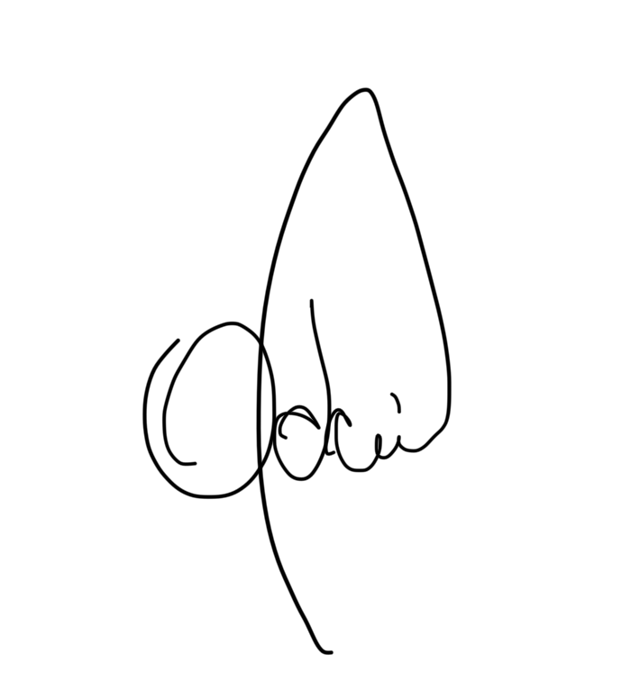

Transportes Coletivos Grande Londrina
Centro de Inteligência Operacional de Londrina

RELATÓRIO DE OCORRÊNCIAS
ProtocoloN° CIOP02105
Referência
O motorista acima citado na data de 14/01/2025, trafegava com o veículo 3071, na linha 200/408, onde foi constatado que o mesmo chegou ao Terminal Central às 19:51hs, sendo seu horário de tabela às 20:00hs, chegando 9 minutos adiantado.
Observando-se que na data de 13/01/2025, já havia sido orientado pelo CIOP sobre o adiantamento, através do Analista de Tráfego 7981 - Jovacir Miano.
Evidências da constatação em anexo ao e-mail.
Obs.: Foi orientado pelo Analista de Tráfego do terminal.
Responsável pelo relatório

Odair Marino Picolo
Registro 9061
Analista de Monitoramento
Documento interno · CIOP / TCGL Operações